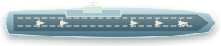

YOUR FLEETFive ships afloat

ENEMY WATERSOne target at a time


Carrier5 cells Battleship4 cells
Battleship4 cellsCruiser3 cells
 Submarine3 cells
Submarine3 cells Destroyer2 cells
Destroyer2 cellsTarget lockedD4
Enemy ships stay hidden.
Confirm your shot below.
 PLAYGRIDBattleship
PLAYGRIDBattleship
Carrier5 cellsBattleship4 cellsSubmarine3 cellsDestroyer2 cellsEnemy ships stay hidden.
Confirm your shot below.